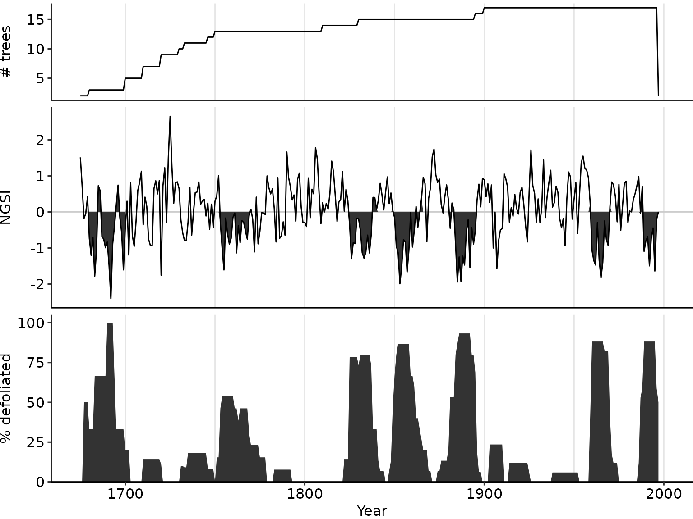

Introduction to dfoliatR
Chris Guiterman
2023-08-09
Source:vignettes/intro-to-dfoliatR.Rmd
intro-to-dfoliatR.RmdInstallation
dfoliatR is not currently on CRAN. To install
dfoliatR use the devtools package:
Once installed, dfoliatR can be called like any other R
package
Data
dfoliatR requires two independent datasets:
Host data: Standardized ring-width series of one or more individual trees (not site series, and multiple cores per tree need to be averaged to the tree level). To average cores and obtain individual tree series, see dplr::treeMean, or use ARSTAN output files (.TRE) with the summary chronology for each tree.
Non-host or control data: Usually a standardized tree-ring chronology (site chronology, not individual tree series) from non-host tree species. Alternatively, an independent annually-resolved climate series.
Both host and non-host data should be formatted in R to match the
dplR::rwl object type.
Data are provided in dfoliatR to demonstrate some of the
utilities of dfoliatR, courtesy of Dr. Ann Lynch.
The first is a collection of Douglas-fir trees sampled for a reconstruction of western spruce budworm. It is paired with a ponderosa pine non-host chronology from a nearby site.
data(dmj_h)The host and non-host objects are directly from dplR in
the form of rwl objects:
| DMJ01 | DMJ02 | DMJ03 | DMJ04 | DMJ06 | DMJ07 | DMJ11 | DMJ14 | DMJ15 | DMJ16 | |
|---|---|---|---|---|---|---|---|---|---|---|
| 1620 | NA | NA | NA | NA | NA | NA | NA | 1.14221 | NA | NA |
| 1621 | NA | NA | NA | NA | NA | NA | NA | 0.84523 | NA | NA |
| 1622 | NA | NA | NA | NA | NA | NA | NA | 0.39534 | NA | NA |
| 1623 | NA | NA | NA | NA | NA | NA | NA | 0.64625 | NA | NA |
| 1624 | NA | NA | NA | NA | NA | NA | NA | 0.67192 | NA | NA |
| 1625 | NA | NA | NA | NA | NA | NA | NA | 0.61729 | NA | NA |
| 1626 | NA | NA | NA | NA | NA | NA | NA | 0.94704 | NA | NA |
| 1627 | NA | NA | NA | NA | NA | NA | NA | 1.21904 | NA | NA |
| 1628 | NA | NA | NA | NA | NA | NA | NA | 0.99266 | NA | NA |
| 1629 | NA | NA | NA | NA | NA | NA | NA | 1.29200 | NA | NA |
data(dmj_nh)| WIR S | |
|---|---|
| 1675 | 0.537 |
| 1676 | 0.780 |
| 1677 | 1.188 |
| 1678 | 1.496 |
| 1679 | 0.781 |
| 1680 | 1.292 |
| 1681 | 1.256 |
| 1682 | 1.117 |
| 1683 | 1.840 |
| 1684 | 0.989 |
The dfoliatR package also includes a second site for
users to explore:
All data created and presented in this vignette is available through the package by the object names used here.
Performance
Analyzing insect outbreak signals from tree rings in
dfoliatR requires a two-step process.
Identify defoliation events on host trees by removing the growth pattern of non-host trees. Host and non-host trees are presumed to respond similarly to climate, so this step produces individual tree-level series of what the two species do NOT share in common.
Composite host individual tree series to the site level to assess the scale of defoliation. Events recorded on more than a threshold number and/or percentage of trees (e.g., 25%) are considered outbreaks.
To identify defoliation events, input the set of host tree series and
the non-host chronology into the defoliate_trees()
function. Some parameters regarding the length and severity of growth
departure can be changed by the user. The parameter defaults follow
those in OUTBREAK (negative departures for 8 or more years, at least one
reaching -1.28 standard deviations, and allowing 1 positive excursion
before and after the greatest departure). Definitions of the function
parameters are provided with ?defoliate_trees
dmj_defol <- defoliate_trees(host_tree = dmj_h, nonhost_chron = dmj_nh,
duration_years = 8, max_reduction = -1.28, list_output = FALSE)| year | series | gsi | ngsi | defol_status |
|---|---|---|---|---|
| 1810 | DMJ01 | 1.0830 | 0.3084 | nd |
| 1811 | DMJ01 | 1.0261 | 0.1024 | nd |
| 1812 | DMJ01 | 1.0971 | 0.3595 | nd |
| 1813 | DMJ01 | 0.9828 | -0.0546 | nd |
| 1814 | DMJ01 | 1.0339 | 0.1307 | nd |
| 1815 | DMJ01 | 1.3461 | 1.2616 | nd |
| 1816 | DMJ01 | 1.4440 | 1.6166 | nd |
| 1817 | DMJ01 | 0.9790 | -0.0682 | nd |
| 1818 | DMJ01 | 0.7929 | -0.7424 | nd |
| 1819 | DMJ01 | 0.9078 | -0.3264 | nd |
The best way to evaluate the results of the call to
defoliate_trees is to graph the resulting “defol”
object:
plot(dmj_defol)
Each horizontal line in the plot provides the measured time sequence
for each tree. Defoliation events are shown as thicker line segments,
with colors to indicate the relative severity of each event. Breakpoints
to distinguish between severe, moderate, and minor defoliation levels
can be set via the breaks parameter in plot or
plot_defol.
Basic and informative tree-level statistics regarding the sample data and defoliation events are provided.
defol_stats(dmj_defol)| series | first | last | years | n_events | tot_years | mean_duration |
|---|---|---|---|---|---|---|
| DMJ01 | 1810 | 1996 | 187 | 4 | 50 | 12 |
| DMJ02 | 1750 | 1996 | 247 | 6 | 75 | 12 |
| DMJ03 | 1830 | 1996 | 167 | 4 | 42 | 10 |
| DMJ04 | 1720 | 1996 | 277 | 8 | 90 | 11 |
| DMJ06 | 1700 | 1996 | 297 | 6 | 81 | 14 |
| DMJ07 | 1710 | 1996 | 287 | 7 | 96 | 14 |
| DMJ11 | 1900 | 1997 | 98 | 2 | 19 | 10 |
| DMJ14 | 1675 | 1996 | 322 | 9 | 112 | 12 |
| DMJ15 | 1730 | 1996 | 267 | 4 | 64 | 16 |
| DMJ16 | 1746 | 1996 | 251 | 7 | 86 | 12 |
It is important to note that dfoliatR distinguishes
between a “defoliation event” that is recorded on individual trees and
an “outbreak” that synchronously effected a proportion of trees.
Outbreak periods can be identified with the function
outbreak(). In essence, this is a composite function that
combines all trees provided in the “defol” object to assess the
synchrony and scale of defoliation. Should enough trees record
defoliation (regardless of the duration), it will be termed an
“outbreak”. Filtering parameters control the percent of trees in
defoliation and minimum number of trees required to be considered an
outbreak.
dmj_obr <- outbreak(dmj_defol, filter_perc = 25, filter_min_series = 3)Running outbreak produces a new class of data frame, an
“outbreak” object.
| year | samp_depth | num_defol | perc_defol | num_max_defol | perc_max_defol | mean_gsi | mean_ngsi | outbreak_status |
|---|---|---|---|---|---|---|---|---|
| 1675 | 2 | 0 | 0.0 | 0 | 0.0 | 1.5303 | 1.5145 | not_obr |
| 1676 | 2 | 0 | 0.0 | 0 | 0.0 | 1.2435 | 0.7143 | not_obr |
| 1677 | 2 | 1 | 50.0 | 0 | 0.0 | 0.9222 | -0.1820 | not_obr |
| 1678 | 2 | 1 | 50.0 | 0 | 0.0 | 0.9716 | -0.0442 | not_obr |
| 1679 | 2 | 1 | 50.0 | 0 | 0.0 | 1.1373 | 0.4198 | not_obr |
| 1680 | 3 | 1 | 33.3 | 0 | 0.0 | 0.7244 | -0.7303 | outbreak |
| 1681 | 3 | 1 | 33.3 | 0 | 0.0 | 0.5545 | -1.2048 | outbreak |
| 1682 | 3 | 1 | 33.3 | 0 | 0.0 | 0.7372 | -0.6983 | outbreak |
| 1683 | 3 | 2 | 66.7 | 1 | 33.3 | 0.3466 | -1.7847 | outbreak |
| 1684 | 3 | 2 | 66.7 | 0 | 0.0 | 0.6063 | -1.0589 | outbreak |
As with “defol” objects, it can be plotted directly, and summary statistics are available.
plot_outbreak(dmj_obr)
dmj_obr_stats <- outbreak_stats(dmj_obr)
head(dmj_obr_stats)| start | end | duration | n_df_start | perc_df_start | max_df_obr | yr_max_df | yr_min_ngsi | min_gsi | min_ngsi |
|---|---|---|---|---|---|---|---|---|---|
| 1680 | 1699 | 20 | 1 | 33.3 | 3 | 1690 | 1692 | 0.121 | -2.407 |
| 1753 | 1769 | 17 | 6 | 46.2 | 7 | 1754 | 1755 | 0.343 | -1.611 |
| 1825 | 1840 | 16 | 11 | 78.6 | 12 | 1831 | 1826 | 0.500 | -1.304 |
| 1849 | 1865 | 17 | 7 | 46.7 | 13 | 1852 | 1853 | 0.252 | -1.994 |
| 1881 | 1895 | 15 | 8 | 53.3 | 14 | 1886 | 1885 | 0.262 | -1.945 |
| 1959 | 1970 | 12 | 7 | 41.2 | 15 | 1960 | 1965 | 0.328 | -1.830 |
| 1987 | 1996 | 10 | 9 | 52.9 | 15 | 1989 | 1995 | 0.378 | -1.640 |
The summary statistics for “outbreak” objects include each identified outbreak event as a row, with start/end years, duration, and other metrics used for analyses.
One important metric to analyze is the return interval of outbreaks. Many researchers use the first year of the event as the point of reference. One can calculate return intervals for our DMJ site in this way via